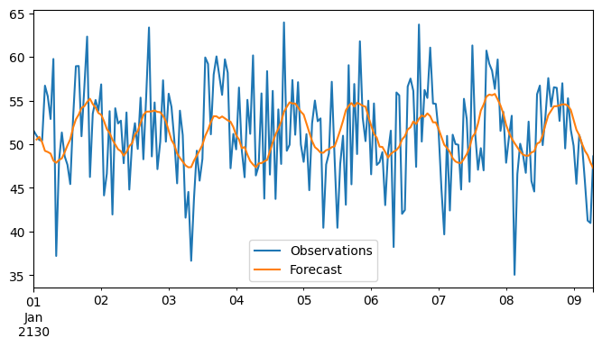
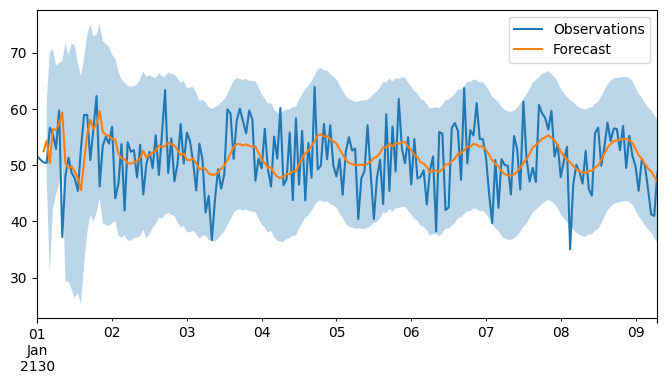
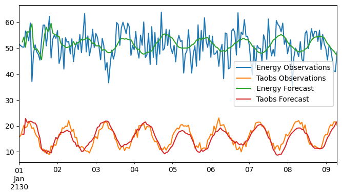

Forecast example
This notebook provides a basic example of forecasting using the PyOnlineForecast package.
The notebook covers
Working with data in “forecast matrix” format
Basic prediction using `
WLSRecursive ridge regression and prediction using
ForecastModelMaking ensembles for multi-horizon forecasting using
ForecastEnsembleSuggestion for hyper parameter optimization
We will use an artificial dataset from the datasets module.
[1]:
from py_online_forecast import *
from py_online_forecast.datasets import sample_data
from py_online_forecast.forecast_tools import Subset
Data & forecast matrices
The sample data is a pandas dataframe obeying the “forecast matrix” format. This means that the columns are a two level MultiIndex and that the (row) index is evenly spaced and monotonically increasing. We start by subsetting the data using the fc accessor, purpose built for working with data in this format.
[2]:
data = sample_data.fc.subset(horizons=(0, 1, 2, 4)).iloc[:200]
data.head()
[2]:
| Variable | energy | Taobs | Ta | ||
|---|---|---|---|---|---|
| Horizon | 0 | 0 | 1 | 2 | 4 |
| 2130-01-01 00:00:00 | 51.531885 | 15.668848 | 14.732529 | 18.112065 | 18.771499 |
| 2130-01-01 01:00:00 | 50.988901 | 16.327964 | 18.274593 | 18.991357 | 18.759832 |
| 2130-01-01 02:00:00 | 50.479686 | 18.319822 | 15.477482 | 22.260192 | 19.841512 |
| 2130-01-01 03:00:00 | 50.420587 | 20.230697 | 15.111263 | 20.589555 | 19.198036 |
| 2130-01-01 04:00:00 | 56.704199 | 19.268107 | 17.443227 | 20.205426 | 18.872228 |
The forecast matrix prescribes that the columns should contain variable names and integer horizons. This way, the \(i´th\) row contains all data made available at the corresponding time, and forecasts are made for row \(i+horizon\).
The fc accessor defines convenience methods for working with such data,
subsetsubsets data by variable names and horizonlaglags data according to the forecast horizon to align data with the time forecasts are made forassert_formatasserts whether the dataframe conforms to the forecast matrix formatconvertconverts nearly compatible dataframes to the format
[3]:
# Subset data
subset_data = data.fc.subset("energy", "Ta", horizons = (0, 1, 2))
# Lag data
lagged_data = subset_data.fc.lag()
# Assert format
subset_data.fc.assert_format()
# Convert to forecast format
converted_data = lagged_data.fc.convert()
converted_data.head()
[3]:
| Variable | energy | Ta | |
|---|---|---|---|
| Horizon | 0 | 1 | 2 |
| 2130-01-01 00:00:00 | 51.531885 | NaN | NaN |
| 2130-01-01 01:00:00 | 50.988901 | 14.732529 | NaN |
| 2130-01-01 02:00:00 | 50.479686 | 18.274593 | 18.112065 |
| 2130-01-01 03:00:00 | 50.420587 | 15.477482 | 18.991357 |
| 2130-01-01 04:00:00 | 56.704199 | 15.111263 | 22.260192 |
Forecasting
Our goal is now to model the energy variable based on temperature observations Taobs and forecasted temperatures Ta. First we define model features,
[4]:
# Target variable
energy = DEFAULT_SOURCE[["energy"]]
# Exogenous variables
taobs = DEFAULT_SOURCE[["Taobs"]]
ta = Subset(DEFAULT_SOURCE, "Ta", horizons=(1,))
const = One()
# Low-pass filter
lp_Taobs = LowPass(taobs, alpha=0.7)
lp_Ta = LowPass(ta, alpha=0.8)
# Construct the design matrix
X = DesignMatrix(const, lp_Taobs, lp_Ta)
We can then create a simple weighted least squares model using the WLS class,
[5]:
# Set a prediction model using weighted least squares (WLS)
pred = WLS(X, energy, horizon=1)
# Make predictions
result = pred(data) # Produces a dict with a key "mean"
result["mean"][:5] # Print the first 5 predictions
[5]:
array([[50.53197728],
[50.84301371],
[50.21675878],
[49.23751956],
[49.11157806]])
Note, the output does not use the forecast matrix format, unless we set it using the ForecastFormat,
[6]:
from py_online_forecast.forecast_tools import ForecastFormat
pred.set_format(ForecastFormat)
result = pred(data) # Produces a dict with keys "mean"
result["mean"].head() # Output is now a DataFrame
[6]:
| Variable | energy |
|---|---|
| Horizon | 1 |
| 2130-01-01 00:00:00 | 50.531977 |
| 2130-01-01 01:00:00 | 50.843014 |
| 2130-01-01 02:00:00 | 50.216759 |
| 2130-01-01 03:00:00 | 49.237520 |
| 2130-01-01 04:00:00 | 49.111578 |
[7]:
import matplotlib.pyplot as plt
# Plot the predicted mean versus the observations
ax = data.plot(y="energy", figsize = (8, 4))
result["mean"].fc.lag().plot(ax=ax) # Shift predictions 1 hour ahead
plt.legend(["Observations", "Forecast"])
plt.show()

For online forecasting, the RRR transformation or the ForecastModel wrapper are better suited, as they use recursive updating schemes. The ForecastModel is especially convenient, as it automatically formas a DesignMatrix from a tuple of input features and uses the ForecastFormat. It also exposes a fit method, which resets the state of the ForecastModel transformation and then calls it on the data.
[8]:
# Create tuple of features
X = (const, lp_Taobs, lp_Ta)
# Create the model
model = ForecastModel(X, energy, 1, track_memory=True, init_K=0.00001)
# Fit the model using the "fit" method
result = model.fit(data, mem=1)
[9]:
import numpy as np
# Plot the predictions
ax = data.plot(y="energy", figsize = (8, 4))
# Plot the mean prediction
lagged_mean = result["mean"].fc.lag().iloc[:, 0] # Shift predictions 1 hour ahead
lagged_mean.plot(ax=ax)
# Plot prediction interval
lagged_cov = result["cov"].fc.lag().iloc[:, 0] # Shift covariance 1 hour ahead
lower = lagged_mean.sub(2*np.sqrt(lagged_cov))
upper = lagged_mean.add(2*np.sqrt(lagged_cov))
ax.fill_between(data.index, lower, upper, alpha = 0.3)
plt.legend(["Observations", "Forecast"])
plt.show()

Multivariate targets are supported with a similar setup,
[10]:
target = DEFAULT_SOURCE[["energy", "Taobs"]]
model_multi = ForecastModel(X, target, horizon=1, track_memory=True, init_K=0.00001)
result_multi = model_multi.fit(data, mem=1)
# Plot the predicted mean versus the observations
ax = data.plot(y="energy", figsize = (8, 4))
data.plot(y="Taobs", ax=ax)
result_multi["mean"].fc.lag().plot(ax=ax)
plt.legend(["Energy Observations", "Taobs Observations", "Energy Forecast", "Taobs Forecast"])
plt.show()

Online updates can be emulated by passing data points one at a time. Most transforms tacitly assume that the first axis of inputs correspond to observations. For single samples, we should therefore pass a dataframe with a single row as input.
[11]:
import pandas as pd
# Subset data
subsets = [data.iloc[[i]] for i in range(len(data))]
# Reset model for proper comparison
model.reset_state()
predictions = []
# Update model with each data subset
for s in subsets:
p = model.update(s, mem=1)["mean"]
predictions.append(p)
predictions = pd.concat(predictions)
# Compare predictions with the previous results
print(
np.allclose(result["mean"].to_numpy()[1:], predictions.to_numpy()[1:])
) # Should be True
True
When forecasting multiple horizons, several approaches are possible. One approach is the create a separate model for each horizon. This is supported by the ForecastEnsemble transformation, which instantiates ForecastModel for each horizon it is given. We begin by making a new model for the second horizon,
[12]:
# Create a new model for 2-hour ahead forecasts
ta2 = Subset(DEFAULT_SOURCE, "Ta", horizons=(2,)) # Use all available forecasts of Ta
# Low-pass filter for the new model
lp_Ta2 = LowPass(ta2, alpha=0.8)
X2 = (const, lp_Taobs, lp_Ta2)
# We then make a prediction for the 2-hour ahead forecast
model_2h = ForecastModel(X2, energy, horizon=2, track_memory=True, init_K=0.00001)
# Note, we can still run the prediction as a standalone object
ref_1h = model.fit(data, mem=1)
ref_2h = model_2h.fit(data, mem=1)
With this setup, some transformations are evaluated multiple times; first when model is called, then when model_2h is called. To avoid this, we can use Combine to evaluate both in one call,
[13]:
models = Combine(model, model_2h)
# Apply the combined model
result = models(data, mem=1)
# Results are returned in a dict indexed by the individual transforms (models),
result_model_1h = result[model]
result_model_2h = result[model_2h]
[14]:
result_model_1h["mean"].head()
[14]:
| Variable | energy |
|---|---|
| Horizon | 1 |
| 2130-01-01 00:00:00 | NaN |
| 2130-01-01 01:00:00 | 52.477670 |
| 2130-01-01 02:00:00 | 54.352502 |
| 2130-01-01 03:00:00 | 50.405863 |
| 2130-01-01 04:00:00 | 56.399926 |
[15]:
result_model_2h["mean"].head()
[15]:
| Variable | energy |
|---|---|
| Horizon | 2 |
| 2130-01-01 00:00:00 | NaN |
| 2130-01-01 01:00:00 | NaN |
| 2130-01-01 02:00:00 | 53.309106 |
| 2130-01-01 03:00:00 | 43.747420 |
| 2130-01-01 04:00:00 | 19.704705 |
Finally, we can achieve this more easily using the ForecastEnsemble class.
[16]:
# First, get all forecasts of Ta
ta_all = DEFAULT_SOURCE[["Ta"]]
# Apply low-pass filters to all forecasts of Ta.
lp_Ta_all = LowPass(ta_all, alpha=0.8)
Xall = (const, lp_Taobs, lp_Ta_all)
horizon_models = ForecastEnsemble(
Xall,
energy,
horizons=(1, 2),
input_horizons="auto",
track_memory=True,
init_K=0.00001,
)
# Then fit the ensemble as normal
horizon_result = horizon_models.fit(data, mem=1)
horizon_result["mean"].head()
[16]:
| Variable | energy | |
|---|---|---|
| Horizon | 1 | 2 |
| 2130-01-01 00:00:00 | NaN | NaN |
| 2130-01-01 01:00:00 | 52.477670 | NaN |
| 2130-01-01 02:00:00 | 54.352502 | 53.309106 |
| 2130-01-01 03:00:00 | 50.405863 | 43.747420 |
| 2130-01-01 04:00:00 | 56.399926 | 19.704705 |
[17]:
# Ensembles can also be updated in an online fashion
horizon_models.reset_state()
predictions = []
for s in subsets:
p = horizon_models.update(s, mem=1)["mean"]
predictions.append(p)
predictions = pd.concat(predictions, axis=0)
# Compare (except two first rows, as they contain NaNs)
print(
np.allclose(horizon_result["mean"].to_numpy()[2:], predictions.to_numpy()[2:])
) # Should be True
True
Hyperparameter optimization
Hyperparameters are not optimized for in the forecast models. Instead we may manually change parameters and define an outer loop optimization procedure. As an example, consider a slow trend in the data
[18]:
# For a non-trivial case, we add a slow trend in the data
trend_data = data.copy()
trend_data[("energy", 0)] += 0.1 * np.arange(len(trend_data))
Then we can use the set_score_mode of the model to compute a “score” field in the output. The set_score_mode is special to Prediction transformations, e.g. ForecastModel and RRR. The method asks the prediction model to also call a score function, which in this case computes the RMSE.
[19]:
from scipy.optimize import minimize
# Set score mode to true
model.set_score_mode()
# Define objective in transformation parameters
def obj(x):
alpha, mem = x
lp_Taobs.alpha = alpha
lp_Ta.alpha = alpha
return model.fit(trend_data, mem=mem)["score"]
# Run the minimization
res = minimize(obj, x0=[0.5, 0.5], bounds=[(0, 1), (0, 1)], method="Nelder-Mead")
res
[19]:
message: Optimization terminated successfully.
success: True
status: 0
fun: 5.700395088827669
x: [ 3.377e-01 9.324e-01]
nit: 63
nfev: 120
final_simplex: (array([[ 3.377e-01, 9.324e-01],
[ 3.378e-01, 9.324e-01],
[ 3.377e-01, 9.324e-01]]), array([ 5.700e+00, 5.700e+00, 5.700e+00]))